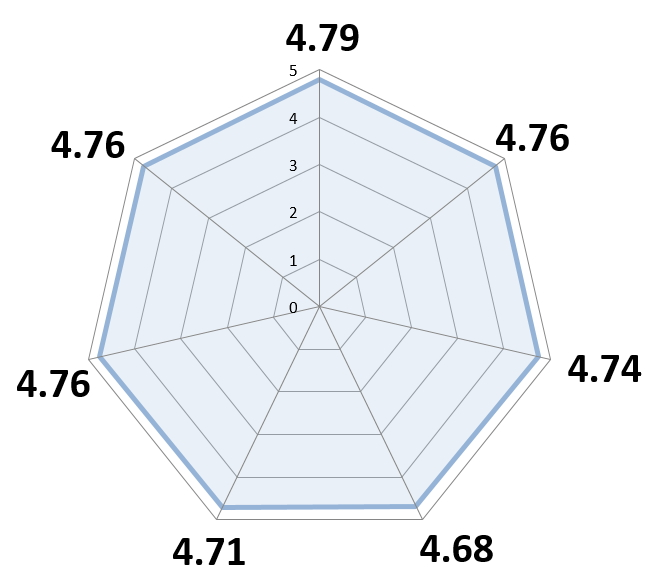
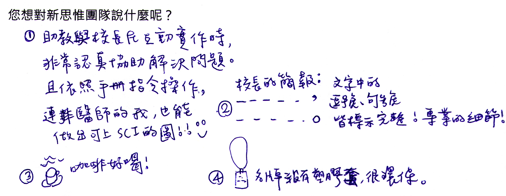
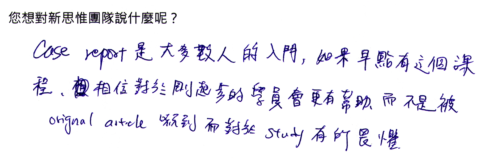

首梯課程，我們仍然採用匿名的問卷回饋與分數統計，希望能得到學員最忠實的意見，讓我們能夠針對課程內容再做優化調整。本次課程分數皆高於 4.68 分，最高達 4.79 分，感謝大家的支持與回饋。
在一片文字海中，圖片往往是最顯眼的部分。好的圖片，能簡明易懂的表達文章結論，或輔助讀者迅速抓住重點。對審閱者而言更是如此，在讀過標題與摘要後，接著必定是以圖片來評估作品水準。不管是個案報告、回顧文章、技術分享、原創研究、醫學影像、統計圖表，都是如此。
新思惟依照學員需求與期望，打造全新課程，協助學員掌握製圖原則，以及審閱者無法明說卻可能是遭受退稿的細節，每一張圖片，都極有可能是投稿成功與否的關鍵。課程以簡單的基本工具，讓學員能親手將醫學影像照片或圖表，處理的盡善盡美。
以下，讓我們來看本梯次學員的特色：
- 老朋友佔 71%，新朋友則佔 29%。
- 71 % 為主治醫師，20 % 為住院醫師。
- 9% 其他醫療相關行業，包括：國際藥廠經理、微創中心個案管理師。
- 已有文章發表的學員佔 49%。課後的匿名回饋中可見，即使是已有經驗者，依然收穫良多。
以下是參加者的手寫回饋，每一份鼓勵，都是讓我們前進的動力；每一條建議，也將出現在我們的檢討會議，繼續努力！
謝謝！
最新活動




最新活動